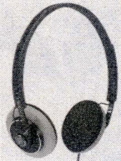
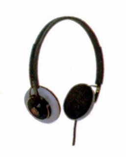

HP-L15


■価格 15,000円■型式 ダイナミック型オープンエアタイプ■振動板 アルミ蒸着フィルム■インピーダンス 63Ω■再生周波数帯域 10-25,000Hz■許容入力 100mW■感度 106dB/mW■コード 3mOFCリッツ線 ステレオミニプラグ■重量 130g(コード含まず）■発売 1983年12月■販売終了 1986年頃■備考 ミニ→標準変換アダプター付サマリュウムコバルトマグネット採用
ビクターのインデックスへ